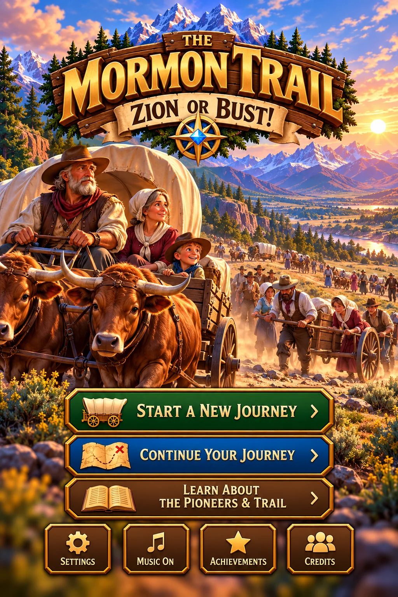

THE MORMON TRAIL
✦ ZION OR BUST! ✦

NAUVOO · BEFORE THE JOURNEY
Meet your pioneer family
Five people, one family, and a long road west.
Look after each other on the trail. Every traveler has a voice and can help the family through the journey.
♪ TRAIL SOUNDTRACK Original Frontier Theme